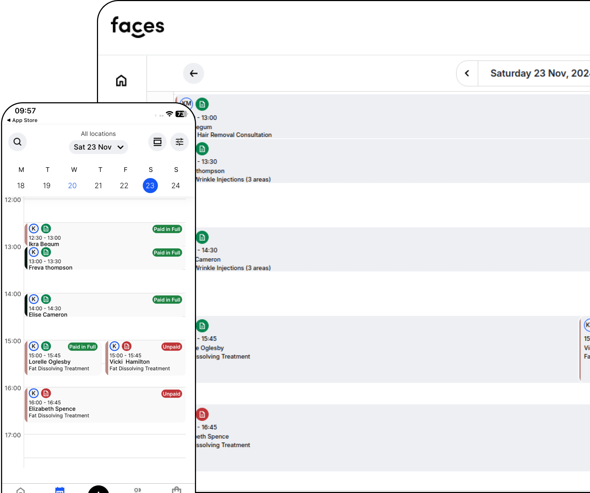
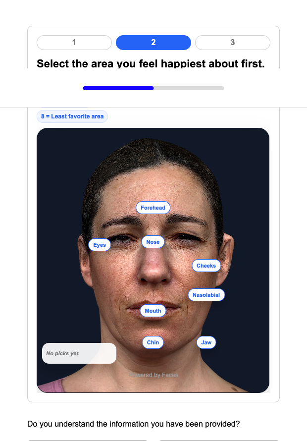
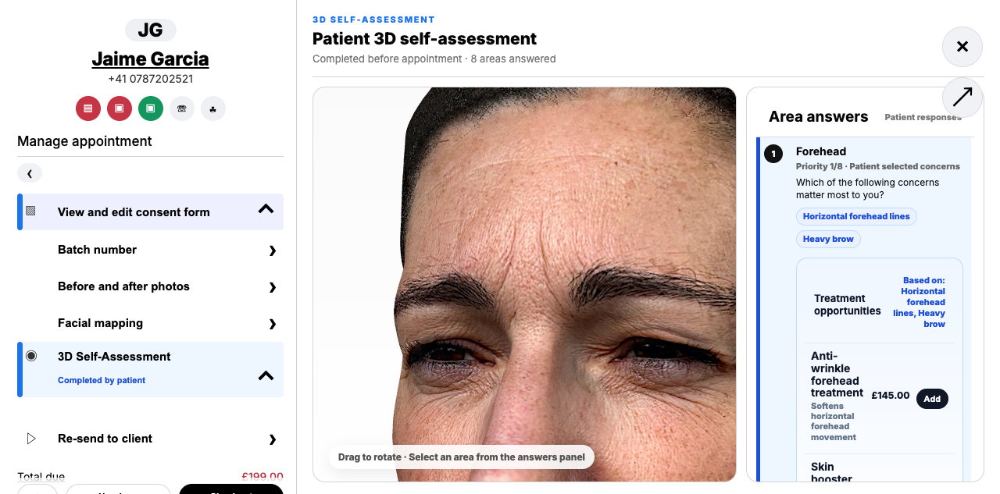
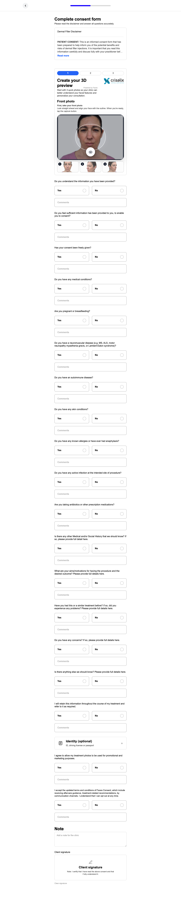

A high‑level vision for connecting Faces’ clinic workflow with Crisalix’s 3D visual experience — helping practices identify, explain and upsell the right treatments with more patient confidence.


Bookings, consent, forms, payments, products and practice workflows create repeated moments where patients and clinics are already engaged.
3D self‑assessment and visual consultation turn abstract interest into concrete, personalised treatment conversations.
The opportunity is not only a better consultation. It is a smarter commercial journey: identify what the patient cares about, show the opportunity visually, and guide them toward primary, complementary and maintenance treatments.
Forms, consent and 3D self‑assessment reveal patient priorities before the appointment.
Concerns become treatment categories, combinations and future care paths.
3D context helps patients understand why a recommendation is relevant.
Aftercare, reminders and next‑best treatments extend revenue beyond one visit.

